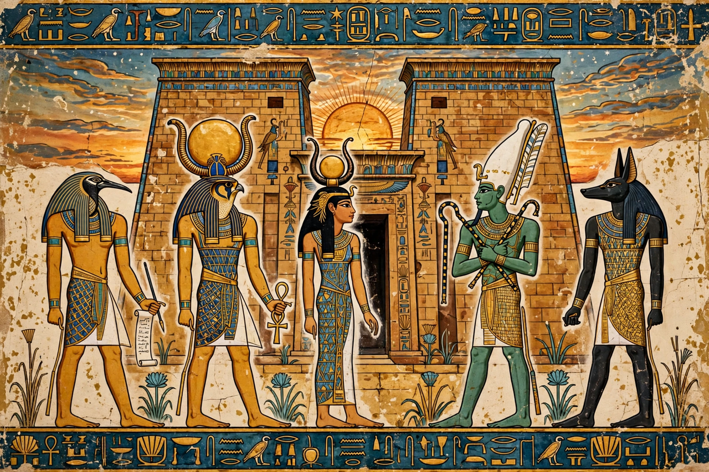

From Wikipedia, the free encyclopedia
| Egyptian mythology | |
|---|---|
| Region | Ancient Egypt |
| Period | c. 3100 BCE – Roman era |
| Key sources | Pyramid Texts, Coffin Texts, Book of the Dead |
| Central concepts | Ma'at (order/truth), the afterlife, the solar cycle |

Egyptian mythology is the collection of myths from ancient Egypt describing the actions of the Egyptian gods as a means of understanding the world. Developed over some three thousand years of pharaonic civilisation, it centred on the maintenance of ma'at — cosmic order, truth and justice — against chaos (isfet), and on the cycles of the Nile, the sun, and death and rebirth.
Egypt had several creation traditions by cult centre: at Heliopolis, the self-created Atum produced Shu (air) and Tefnut (moisture), then Geb (earth) and Nut (sky), whose children — Osiris, Isis, Set and Nephthys — formed the Ennead; at Memphis, Ptah created by speaking; at Hermopolis, an Ogdoad of eight primordial deities preceded creation. Ra (god) (or Ra-Atum) the sun god sailed across the sky by day and through the underworld (Duat) by night, defended against the chaos-serpent Apophis.
The central narrative cycle tells how Osiris was murdered by his brother Set (god), scattered, and reassembled and revived by his wife Isis, becoming ruler of the dead, while their son Horus contested Set for the kingship of the living — the mythical charter for pharaonic rule, each king being a living Horus and becoming Osiris at death. Belief in judgement after death — the heart weighed against the feather of ma'at before Osiris and 42 assessors, with Anubis and Thoth in attendance — drove the arts of mummification and the funerary literature of the Book of the Dead.
Egyptian religion proved extraordinarily durable; the cult of Isis spread through the Greco-Roman world, and temple worship at Philae continued into the 6th century CE. Decipherment of hieroglyphs in the 19th century recovered the mythology's texts, whose imagery — pyramids, obelisks, the ankh and the Eye of Horus — remains globally recognisable.